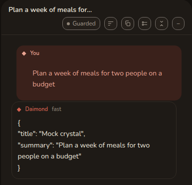
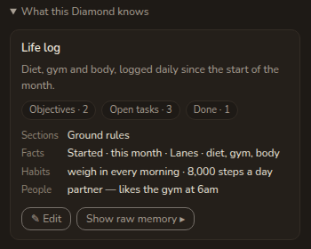

Chats & Diamonds
Ein Chat ist ein Gespräch. Ein Diamond ist ein gespeichertes Projekt mit eigenem Gedächtnis, eigener Seite und eigenen Dateien. Das eine bewahren Sie im anderen auf.
Ein Chat
Die + neben Chats beginnt einen. Tippen Sie in das Feld und senden Sie. Ein neuer Chat trägt den Titel Neuer Chat , bis Sie etwas sagen, und danach ist seine erste Zeile sein Titel.
Während eine Antwort ankommt, können Sie weitertippen. Eine dann gesendete Nachricht wartet als gestrichelte Blase und geht als eigener Zug ab, sobald die Antwort fertig ist. Klicken Sie sie an, um sie zurückzuholen, oder ihr Kreuz, um sie zu verwerfen. Ein Druck auf Stopp gibt alles Wartende unversendet an Sie zurück.
Einen Chat zu löschen verschiebt ihn in den Papierkorb, es fragt also nichts zuerst. Die beiden Handlungen, die sich nicht rückgängig machen lassen, sind die, die fragen, und beide sitzen in diesem Panel.
Einen langen Thread lesen

Jeder Zug ist eine Kachel, beschriftet mit Sie, Denkt nach, Werkzeug, Daimond, oder als Hinweis der App selbst. Jede Kopfzeile trägt das lokale Datum und die Uhrzeit auf die Minute genau in holozäner Zeitrechnung, also ist 12026-09-15 13:12 dieses Jahr plus zehntausend. Fahren Sie darüber für den vollen Zeitpunkt mit seinem Versatz.
Die Kopfzeile des Chats trägt die Bedienelemente.
- Schritte zeigen zeigt die Arbeit, die zwischen Ihrer Nachricht und der Antwort geschah.
- Antworten einklappen lässt nur, was Sie gefragt haben. Das ist der schnellste Weg zu überfliegen, und so beginnen Sie, Züge auszuwählen.
- Kurze Antworten ist eine ständige Bitte um Kürze in diesem Chat. Es ist eine Datei in Ihrem Arbeitsbereich, die Sie bearbeiten können, keine versteckte Anweisung.
- Der Berechtigungs-Chip liest sich als Bewacht, Jedes Mal fragen oder Umgehen. Siehe Sicherheit & Problembehebung.
Zwei Pfeilspitzen neben der Sendeschaltfläche gehen durch Ihre eigenen Nachrichten zurück und zum Ende wieder vor.
Wie ein Abbruch aussieht
Ein Zug sagt in genauen Worten, wie er geendet hat.
- Beantwortet heißt, er ist fertig und hat etwas gesagt.
- Angehalten heißt, Sie haben Stopp gedrückt.
- Schrittgrenze erreicht heißt, ihm sind die Runden ausgegangen.
- Ohne etwas zu sagen beendet heißt, das Modell hat gar nichts zurückgegeben.
- Ohne Antwort beendet, nach Überlegen heißt, es hat nachgedacht, wurde einmal gebeten zu antworten oder ein Werkzeug zu benutzen, und hat trotzdem nichts gesagt.
- Mit einem Fehler beendet, oder Beendet: der Werkzeugaufruf kam als Text an, sagen, was sie sagen.
Keines davon gibt sich als Antwort aus.
Einen Chat behalten
Zwei Schaltflächen sitzen auf der Zeile eines Chats in der Leiste. Behalten macht aus dem ganzen Gespräch ein Diamond. Alles einklappen macht daraus ein Diamond, indem es zusammengefasst wird: Was herausgearbeitet wurde, bleibt, das Hin und Her fällt weg.
Um nur einen Teil zu behalten, klappen Sie die Antworten ein, haken Sie die bewahrenswerten Züge an und wählen Sie Ausgewählte einklappen. Klappen Sie einen Schritt ein, den Sie übernommen haben, und lassen Sie eine beiläufige Bemerkung, wo sie ist.
Nichts wird von selbst aufgenommen. Das Gedächtnis eines Diamond ändert sich nur durch ein Einklappen oder eine Bearbeitung, und jedes Schreiben wird im Verlauf aufbewahrt.
In einem Diamond
Ihre Diamonds sitzen über Ihren Chats, und die + legt eines an. Ein Diamond hat zwei Seiten, und ein Schalter in seiner Kopfzeile wechselt zwischen ihnen. Kristall ist, was es weiß, und Chat ist sein eigenes Gespräch.

Die Karte führt den Titel und die Zusammenfassung des Diamond in seinen eigenen Worten auf, dann alles andere, was es hält, je eine Zeile. Bearbeiten öffnet ein Formular. Rohes Gedächtnis anzeigen öffnet die Datei selbst, für wenn Sie lieber direkt darin arbeiten.
Die vier Dateien, die ein Diamond hält
Das Gedächtnis wird offen gehalten. Vier Dateien sitzen im eigenen Ordner des Diamond, lesbar im Workspace-Panel und für den Daimon.
crystal.jsonhält, was dieses Diamond ist, also seinen Titel, seine Zusammenfassung, Abschnitte, Fakten und Verknüpfungen.REQUIREMENTS.mdhält, was zu tun ist, als Ziele mit eingestuften Aufgaben darunter. Eine Aufgabe verlässt sie, indem sie abgehakt oder durchgestrichen wird, und durch nichts sonst.DECISIONS.mdhält, was entschieden wurde, mit Datum und Begründung. Neue Entscheidungen werden angehängt, alte bleiben, wie sie waren.STATE.mdhält, wo die Dinge jetzt stehen, und wird jedes Mal überschrieben.
Alle vier reisen mit dem Daimon in jeder Runde innerhalb eines Budgets, was einem Diamond über sich selbst gesagt wird, ist also begrenzt und vorhersehbar. Ein Kristall, der zu groß ist, um ganz hineinzupassen, hält seinen Überlauf lesbar und durchsuchbar, statt ihn fallenzulassen. Die Zählungen auf der Karte, Ziele, Offene Aufgaben und Erledigt, werden abgelesen von REQUIREMENTS.md.
Zwei Arten des Einklappens
Das Wort deckt zwei verschiedene Handlungen ab.
- Frühere Nachrichten zusammenfassen, in der Kopfzeile des Chats, ist die App, die ein Gespräch verdichtet, das nicht mehr passt. Ihre Entscheidungen werden abgelegt in
DECISIONS.md, ihre offenen Punkte inREQUIREMENTS.md, und ihr nächster Schritt inSTATE.md. Was sie ablegt, lässt sich danach finden, was sie in einem Hinweis zurücklässt, nicht. - Jetzt einklappen, auf der Kristall-Seite, ist ein Modell, das umschreibt, woran sich dieses Diamond erinnert, ausgehend von dem, was seither geschehen ist. Jedes Schreiben hält eine Version fest.
Das Ablegen ist wiederholbar, dasselbe Einklappen zweimal auszuführen legt also nichts zweimal ab, und die Reihenfolge, in der zwei Einklappungen ankommen, ändert nicht, was die Dateien am Ende sagen.
Verlauf
Verlauf führt jede Version auf, die neueste zuerst. Ansehen liest eine, Wiederherstellen macht sie wieder zur aktuellen, und Delta zeigt das Material, das einem Einklappen gegeben wurde. Wiederherstellen behält zuerst, was aktuell war, ein Wiederherstellen lässt sich also selbst rückgängig machen.
Handeln, ohne gefragt zu werden
Ein Diamond antwortet, wenn Sie es dazu auffordern, und zu keinem anderen Zeitpunkt, es sei denn, Sie richten eine ausgelöste Aktion ein. Die wohnen unter Wann dieses Diamond handelt auf der Kristall-Seite, und Aktion hinzufügen legt eine an. Zwei Dinge können eine auslösen: entweder Minuten Ihrer eigenen Aktivität, nur gezählt, während Sie arbeiten, oder Mail, die in einem von Ihnen genannten Ordner ankommt.
Jede Aktion trägt eine Anweisung, jedes Mal gesendet, und einen Kontext, einmal gesendet, bis Sie ihn ändern. Sie sind eine gewöhnliche Datei, triggers.json, im Ordner des Diamond.
Eine neue Aktion ist angehalten, und sagt das: Angehalten. Drücken Sie ▶ auf dem Licht neben dem Ausklapper, damit diese Aktion läuft. Ein Druck schaltet sie scharf.
Das Licht
Jede Aktion, jedes Diamond und die Alles -Zeile tragen dasselbe dreiteilige Bedienelement, ein Abspielen, ein Anhalten und ein rundes Licht. Das Licht sagt, ob etwas scharf geschaltet ist und frei auslösen kann.
- Rot. Hier wird nichts von selbst handeln.
- Bernstein. Einiges wird es, und einiges ist angehalten.
- Grün. Alles Eingerichtete wird handeln.
Ein frisches Konto ist überall rot, die ehrliche Antwort darauf, ob irgendetwas von selbst läuft. Eine Aktion ohne Postfach oder Anweisung bleibt außen vor, denn sie könnte nicht auslösen. Bernstein lässt sich nur erreichen, nie setzen.
Eine angehaltene Aktion gibt nichts aus, denn sie wird abgelehnt, bevor der Zug beginnt.
Tags, Verknüpfungen und der Papierkorb
Tags auf der Kristall-Seite legt ein Diamond in der Leiste ab. Bis zu acht Tags, klein geschrieben und ohne Duplikate. Vorgeschlagen bietet vier zum Anfangen an. Tags sind untätig. Sie werden nicht an ein Modell gesendet, sie sind kein Teil des Gedächtnisses, und sie ändern nichts, was ein Agent tut. Nach Tag filtern in der Leiste engt danach ein.
Ein Diamond lässt sich auch mit einem anderen verknüpfen, und der Graph ist das Bild davon.
Einen Chat oder ein Diamond zu löschen wirft ihn in den Papierkorb. Er wird weiterhin gespeichert und synchronisiert, außer Reichweite jedes Daimon, und dreißig Tage mit dem Datum auf der Zeile aufbewahrt. Wiederherstellen bringt ihn auf jedem Gerät zurück. Endgültig löschen und Papierkorb leeren sind die beiden, die fragen.